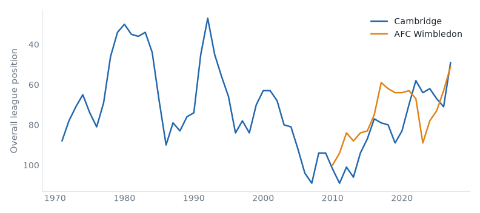
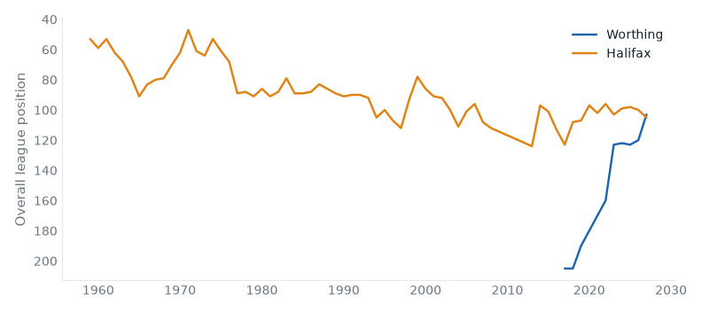

26 fixtures across 3 divisions, week of 26 September 2026.
Cambridge host AFC Wimbledon in League One on Saturday 26 September. Cambridge United are, on the balance of their record, a League Two club; this season is their highest since 2025; they sit 5th with 12 points from 7 games, form DWDWL. AFC Wimbledon live between League One and League Two; they are 1 division above that this season; they sit 7th with 11 points from 7 games, form DWWLW. They have met 10 times in league play since 2009/10: Cambridge United 4 wins, AFC Wimbledon 3, 3 drawn.

|
|
Stockport v Peterboro
Sat 26 Sep · above level
Stockport County 9th (DLWLW), Peterborough United 23rd (LDLDL). At least one of them sits above where their record says they belong.
| Sat 26 | Plymouth v Burton | above level |
| Sat 26 | Wycombe v Reading | fallen giant |
Cheltenham v Chesterfield
Sat 26 Sep · below level
Cheltenham Town 5th (DWDWD), Chesterfield 8th (WWDDL). At least one of them sits below where their record says they belong.
Shrewsbury v Colchester
Sat 26 Sep · below level
Shrewsbury Town 18th (DWLLW), Colchester United 15th (DDLLW). At least one of them sits below where their record says they belong.
York v Gillingham
Sat 26 Sep · below level
York City 7th (LWDLW), Gillingham 4th (WWWDD). At least one of them sits below where their record says they belong.
| Sat 26 | Bristol Rvs v Exeter | below level |
| Sat 26 | Fleetwood Town v Rochdale | below level |
| Sat 26 | Newport County v Grimsby | below level |
| Sat 26 | Oldham v Salford | fallen giant |
| Sat 26 | Rotherham v Crewe | below level |
| Sat 26 | Swindon v Accrington | fallen giant |
| Sat 26 | Tranmere v Walsall | below level |
Worthing host Halifax in the National League on Saturday 26 September. Worthing are, on the balance of their record, a Step 3 club; this season is the highest in their record; they sit 11th with 14 points from 9 games, form WWDDL. FC Halifax Town's record runs the length of the pyramid, but its centre of gravity is League Two; they are 1 division below that now; they sit 13th with 13 points from 9 games, form DWWLW.

|
|
Altrincham v Hornchurch
Sat 26 Sep · 2 above level
Altrincham 10th (WWLWW), Hornchurch 9th (WLLLW). At least one of them sits above where their record says they belong.
Carlisle v Woking
Sat 26 Sep · fallen giant
Carlisle United 16th (LDDLW), Woking 18th (DDWLD). Carlisle United have played in the top flight.
Scunthorpe v Hartlepool
Sat 26 Sep · below level
Scunthorpe United 22nd (LLWLL), Hartlepool United 19th (LLLWL). At least one of them sits below where their record says they belong.
Southend v Barrow
Sat 26 Sep · 2 below level
Southend United 2nd (WWDWD), Barrow 17th (WLDWD). At least one of them sits below where their record says they belong.
| Sat 26 | Aldershot v Tamworth | below level |
| Sat 26 | Boston Utd v Fylde | above level |
| Sat 26 | Harrogate v Eastleigh | relegated last season |
| Sat 26 | Kidderminster v Yeovil | |
| Sat 26 | Solihull v Boreham Wood | |
| Sat 26 | Sutton v Forest Green | above level |
| Sat 26 | Wealdstone v Gateshead |
Reviewed on Monday review, tiers 1–2 and Tuesday review, tiers 3–5.
Built from the English football database, tiers 1–5 from 1958/59. Results from football-data.co.uk. Archived copy.